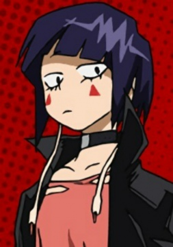

Cтудентка академии Юуэй, которая тренируется, чтобы стать профессиональным героем. Кьека самоуверенная, беспристрастная и грубая личность. В большей степени ее холодность и грубость достается тем, кто ее раздражает, в частности ее однокласснику Денки Каминари, который чаще всего становится мишенью ее язвительных комментариев. Кроме того она может быть достаточно агрессивной и может использовать свою причуду, чтобы физически наказывать или сдерживаtт людей в узде, особенно Денки и Минору Минету. Но в то же время она может быть чуткой и внимательной по отношению к друзьям. Она боится ужасов и испытывает отвращение к наготе.